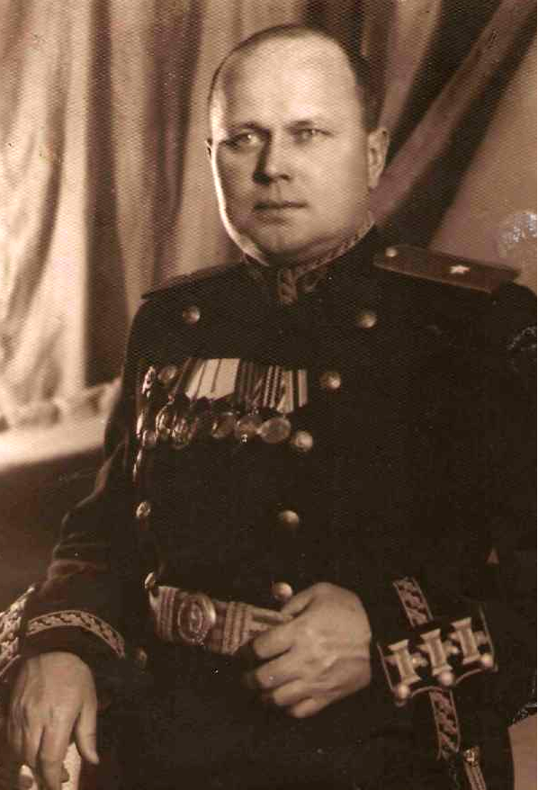

Карандашев Сергей Петрович
Карандашев Сергей Петрович
(1903 – 1972)
Родился в деревне Коряково Городецкой волости, ныне Кичменгское поселение,
в многодетной крестьянской семье, в которой было четверо сестер и трое братьев.
Отец Петр Федорович, сельский крестьянин, в 20е годы был делегатом Всероссийской сельскохозяйственной выставки в
Москве от Северо – Двинской губернии.
После окончания школы, как один из наиболее способных учеников, работал учителем начальных классов в деревне Бараново. В 1925 году был призван на Балтийский флот. Прошел обучение в электроминной школе Балтийского флота. С мая 1927 года по июнь 1931 года служил старшим минным электриком на эсминцах «Петровский», «Фрунзе» и сторожевом корабле «Шторм» Черноморского флота. В ноябре 1931 года назначен боцманом сторожевого корабля «Шторм». Частый перевод с корабля на корабль означал, что С.П. Карандашев отлично знал свою специальность и на каждом корабле хорошо готовил минных специалистов.
В годы службы на кораблях Черноморского флота участвовал во многих дальних походах. Однажды его корабль был в Турции в Стамбуле с почетной миссией на похоронах президента Турции Кемаля Ататюрка. Как отличник боевой и политической подготовки С.П. Карандашев стоял в почетном карауле. В 1932 году участвовал в походе с визитом дружбы кораблей Черноморского флота в Италию. Уволился в запас в январе 1934 года.
С 19 января 1934 года служил в органах государственной безопасности. В 1936-1937 годах принимал участие в действиях флота республиканской Испании в годы Гражданской войны 1936-1939 годов. В начале Великой Отечественной войны, в августе-сентябре 1941 года, С.П. Карандашев участвовал в печально знаменитом переходе кораблей Балтийского флота из осажденного Таллинна в Ленинград. Участвовал в обороне острова Ханко. Активный участник обороны города на Неве.
В августе 1943 года ему было присвоено звание капитана 1-го ранга, а Постановлением СНК СССР от 5 ноября 1944 года- воинское звание генерал-майора. Дальнейшая служба проходила в органах государственной безопасности в должности начальника контрразведки ВМФ СССР. Уволился в запас 7 августа 1958 года.
Награждён тремя орденами Красной Звезды, орденом Отечественной войны 1-ой степени, двумя орденами Ленина, орденом Красного Знамени и многими медалями. Умер и похоронен в Ленинграде.
После окончания школы, как один из наиболее способных учеников, работал учителем начальных классов в деревне Бараново. В 1925 году был призван на Балтийский флот. Прошел обучение в электроминной школе Балтийского флота. С мая 1927 года по июнь 1931 года служил старшим минным электриком на эсминцах «Петровский», «Фрунзе» и сторожевом корабле «Шторм» Черноморского флота. В ноябре 1931 года назначен боцманом сторожевого корабля «Шторм». Частый перевод с корабля на корабль означал, что С.П. Карандашев отлично знал свою специальность и на каждом корабле хорошо готовил минных специалистов.
В годы службы на кораблях Черноморского флота участвовал во многих дальних походах. Однажды его корабль был в Турции в Стамбуле с почетной миссией на похоронах президента Турции Кемаля Ататюрка. Как отличник боевой и политической подготовки С.П. Карандашев стоял в почетном карауле. В 1932 году участвовал в походе с визитом дружбы кораблей Черноморского флота в Италию. Уволился в запас в январе 1934 года.
С 19 января 1934 года служил в органах государственной безопасности. В 1936-1937 годах принимал участие в действиях флота республиканской Испании в годы Гражданской войны 1936-1939 годов. В начале Великой Отечественной войны, в августе-сентябре 1941 года, С.П. Карандашев участвовал в печально знаменитом переходе кораблей Балтийского флота из осажденного Таллинна в Ленинград. Участвовал в обороне острова Ханко. Активный участник обороны города на Неве.
В августе 1943 года ему было присвоено звание капитана 1-го ранга, а Постановлением СНК СССР от 5 ноября 1944 года- воинское звание генерал-майора. Дальнейшая служба проходила в органах государственной безопасности в должности начальника контрразведки ВМФ СССР. Уволился в запас 7 августа 1958 года.
Награждён тремя орденами Красной Звезды, орденом Отечественной войны 1-ой степени, двумя орденами Ленина, орденом Красного Знамени и многими медалями. Умер и похоронен в Ленинграде.